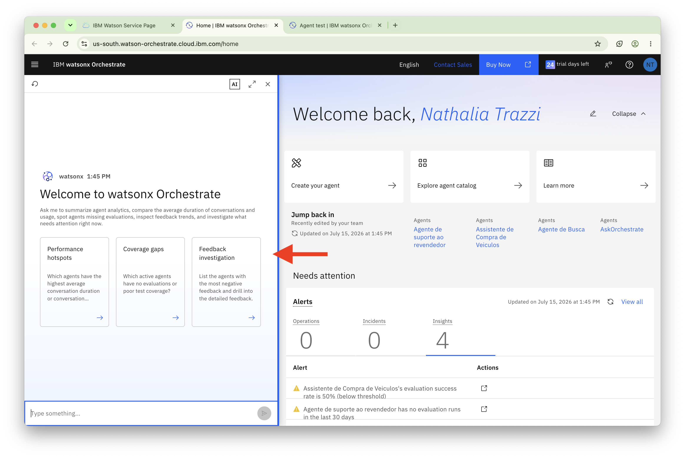
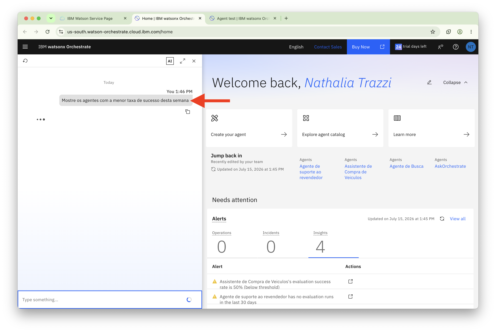
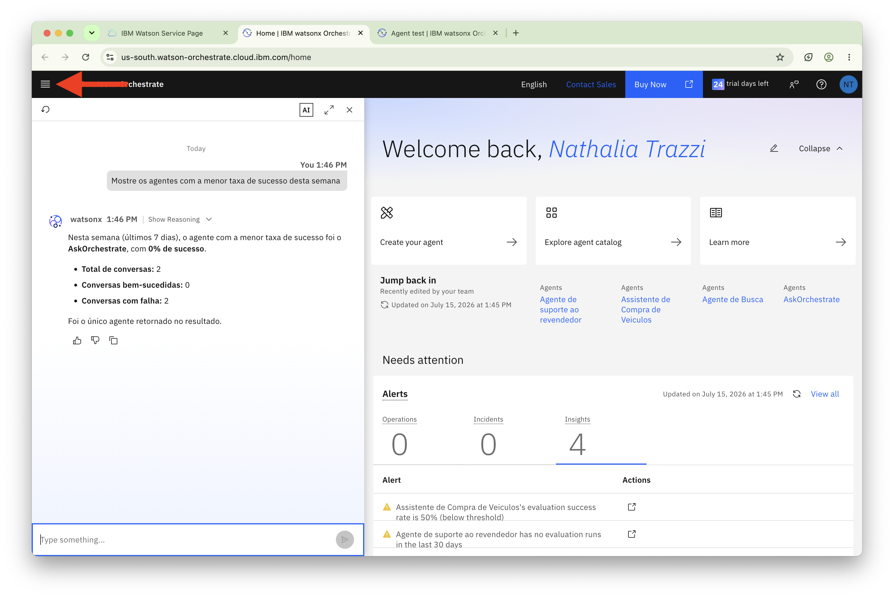
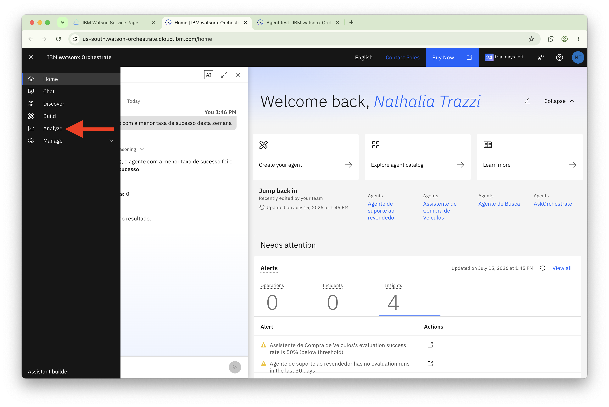
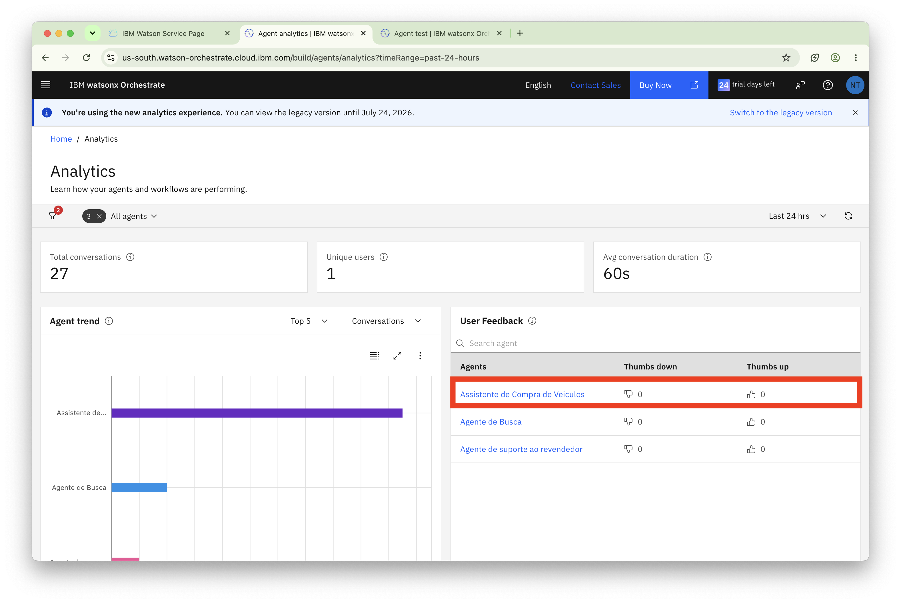
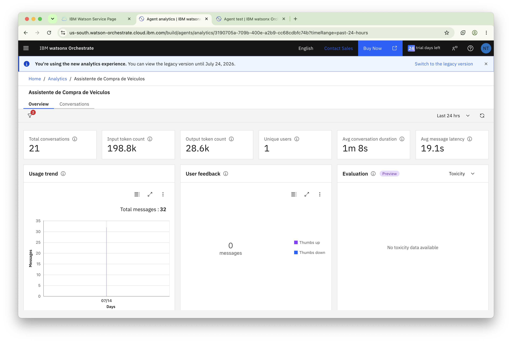
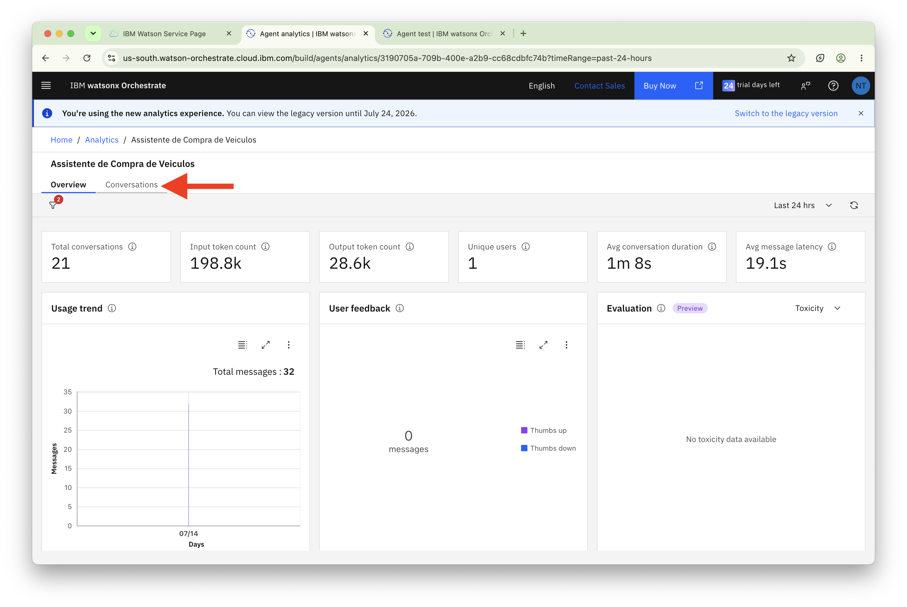
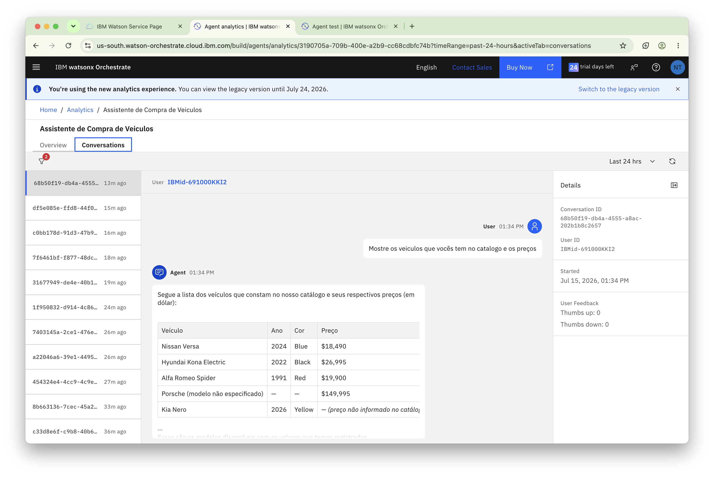

Monitorando Agentes em Tempo Real com watsonx Orchestrate
Acompanhe o desempenho dos agentes, analise padrões de conversação e monitore métricas de qualidade em tempo real.
Visão Geral
Este laboratório apresenta os recursos de monitoramento em tempo real disponíveis no watsonx Orchestrate.
Ao longo das atividades, você aprenderá a acompanhar o desempenho dos agentes, analisar padrões de conversação e monitorar métricas importantes, como taxas de sucesso, feedback dos usuários e indicadores de segurança e qualidade das respostas.
O monitoramento contínuo é essencial para garantir a eficiência dos agentes em produção, identificar comportamentos inesperados e agir proativamente na resolução de problemas antes que eles impactem a experiência dos usuários.
Visualizar Resultados de Monitoramento
Vamos verificar o dashboard de monitoramento.
-
Clique em IBM watsonx Orchestrate no canto superior esquerdo para retornar à tela de boas-vindas do control plane.
-
Vamos explorar as analytics de agentes usando o chat à esquerda.

-
Faça a seguinte pergunta:
Mostre os agentes com a menor taxa de sucesso desta semana
-
Em seguida, vamos explorar Platform e Agent Analytics. Clique no ícone de hambúrguer conforme indicado na imagem abaixo:

-
Selecione Analyze no menu hambúrguer.

-
Você verá o dashboard de avaliação com métricas-chave incluindo principais conversas, usuários únicos e duração média de conversação. Você também verá gráficos refletindo o número de conversas com cada agente e o desempenho de seus agentes.
Clique no seu agente recém-criado, o orquestrador.

-
Isso mostra detalhes de todas as mensagens na conversação do seu agente.

-
Vamos alterar a visualização, clique na aba
Conversations.
-
Nota
Note que devido a você ter poucas interações no seu agente e em apenas um dia, a maioria das métricas não deve estar disponível, assim como na imagem abaixo.

Entendendo as Métricas
Métricas de Feedback do Usuário
Sou desenvolvedor e quero me aprofundar no watsonx Orchestrate
Todas as operações realizadas também estão disponíveis em uma experiência utilizando o ADK (Agent Development Kit). Clique aqui para saber mais como criar agentes, tools, bases de conhecimentos e muito mais.